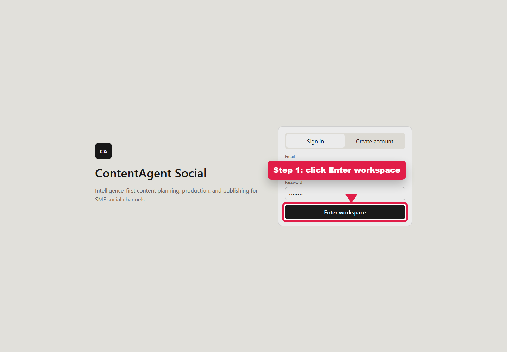
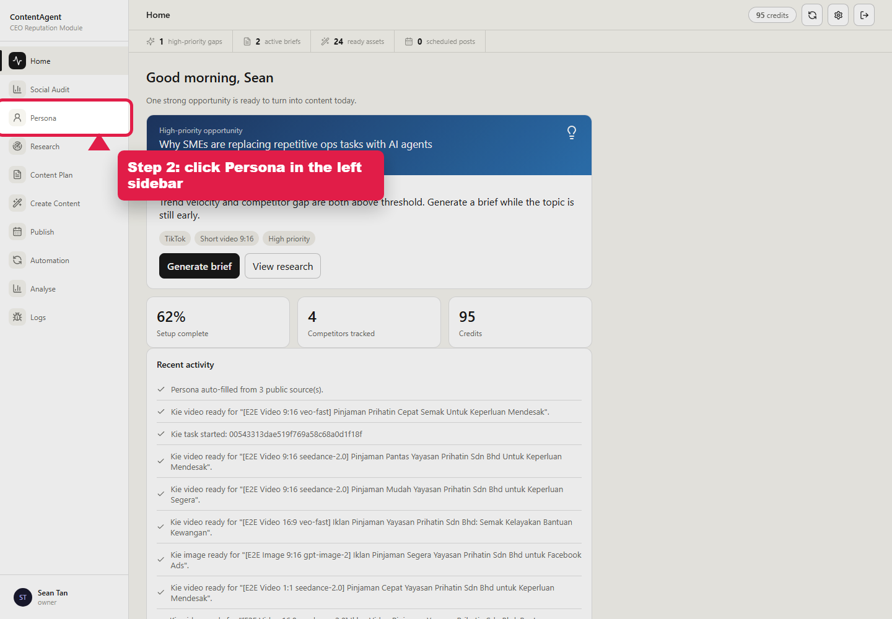
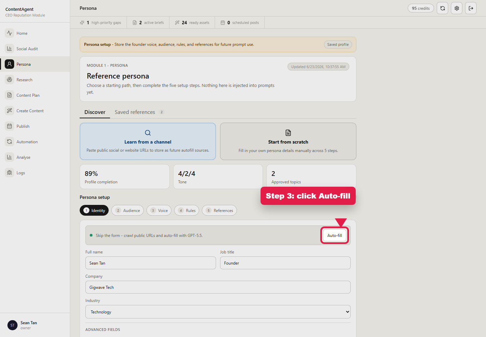
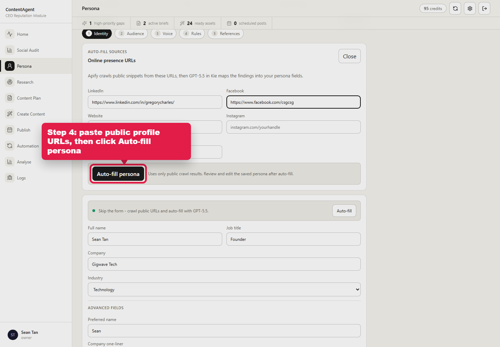

Persona Auto-Fill: Where To Click
Open the web app, enter the workspace, then go to Persona. Use Auto-fill to crawl public LinkedIn, Facebook, website, Instagram, or X profile URLs and save the persona.



